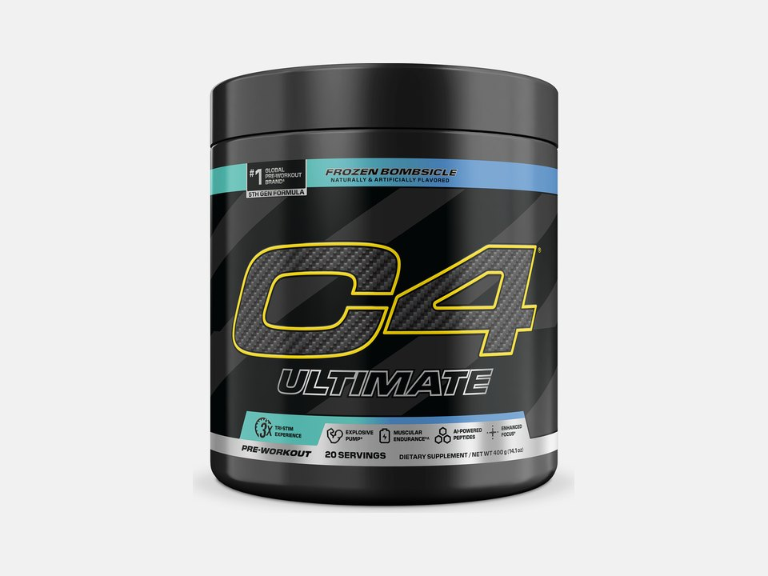

Product imagery supplied by the retailer. Packaging may vary — verify the Supplement Facts panel on the container you receive.
Cellucor
C4 Ultimate
High stimulant content · Read safety guidance
Our analysis — editorial take, not from the label
Cellucor's flagship tri-stim formula pairs 300 mg caffeine with TeaCrine and Dynamine for a smoother energy curve, with beta-alanine at the commonly studied 3.2 g daily amount and a citrulline-arginine pump blend - priced like a premium product despite its mainstream retail availability.
- Caffeine
- 300 mg
- Citrulline
- 6 g
- Beta-alanine
- 3.2 g
- Servings
- 20
Price tier: Premium · relative cost per full serving across this database
We don't list dollar prices — they change daily and go stale. Check the live price instead:
View current price at Amazon Compare all 51 pre-workoutsScoop Sense doesn't collect user reviews and won't invent them. Read customer reviews on Amazon
Affiliate links — Scoop Sense may earn a commission at no additional cost to you.
Multiple flavors including Frozen Bombsicle, Icy Blue Razz, Hawaiian Punch, and Cherry Jolly Rancher, sweetened with sucralose and acesulfame potassium.
Label verified: July 2026 · View supplement facts image
Label data
Per full serving · 20 servings per container · from the manufacturer's panel
| Caffeine | 300 mg |
|---|---|
| TeaCrine + Dynamine | 10 mg + 50 mg |
| Beta-Alanine (CarnoSyn) | 3.2 g |
| Velox (L-Citrulline + L-Arginine) | 6 g |
| Proprietary blend | No |
Primary label source: Cellucor - C4 Ultimate product page (official) · verified July 2026
Cautions
- 300 mg caffeine (about 3 cups of coffee) plus TeaCrine and Dynamine on top adds meaningfully to total stimulant load despite the 'smooth energy' marketing.
- 3.2 g beta-alanine will cause a temporary tingling (paresthesia) sensation.
- Contains 1 mg Rauwolfia vomitoria extract (alpha-yohimbine), an additional stimulant compound not everyone tolerates well.
Formulated for healthy adults — not intended for anyone under 18. Performance studies use roughly 3–6 mg of caffeine per kg of body weight, which puts 300 mg at the studied amount for a 50–100 kg adult. Full health & safety notes
Product details
Where this label sits
Cellucor C4 Ultimate sits in the high stim tier of the Scoop Sense pre-workout database, which spans 0–400 mg of caffeine per serving. Every active ingredient on the panel is listed with its own dose — nothing is hidden inside a blend total. It runs 20 servings per container at the full labeled serving. Everything on this page comes from the manufacturer's supplement facts panel as of July 2026 — never from the marketing page.
Key ingredients & studied doses
- Caffeine Anhydrous · 300 mg. About 3 cups of coffee per 1-scoop serving.
- TeaCrine + Dynamine · 10 mg + 50 mg. Dynamine at 50 mg sits at the low end of the 50-100 mg commonly used, while TeaCrine at 10 mg is well below the 50-300 mg range studied for theacrine; both are marketed to smooth out the 300 mg of caffeine anhydrous.
- Beta-Alanine (CarnoSyn) · 3.2 g. Matches the ~3.2 g/day dose most commonly used in beta-alanine endurance studies.
- Velox (L-Citrulline + L-Arginine) · 6 g. The 6 g Velox blend splits roughly evenly between L-citrulline and L-arginine, so the citrulline portion lands near 3 g - below the 6-8 g of citrulline used in most pump research.
Flavors & sweetener
Multiple flavors including Frozen Bombsicle, Icy Blue Razz, Hawaiian Punch, and Cherry Jolly Rancher, sweetened with sucralose and acesulfame potassium.
Who it's best for
Users with an established caffeine tolerance. Derived from the label figures above — not medical advice.
How we log this label
Every entry is built the same way: we read the current supplement facts panel, log each disclosed dose, compare it against the amounts used in published research, flag proprietary blends, and state the cautions plainly. The full methodology explains each step.
This label against the research
How we evaluate labelsEach bar shows the amount commonly used in published human research, and where this label's dose falls against it. Research amounts are context, not a recommendation — they are not doses, and nothing here is medical advice. The bars compare what the label states; we do not laboratory-test the product to confirm it.
-
Caffeine300 mg
At or above the studied amount0studied range 200 mg–400 mg450 mg
Performance studies most often use 3–6 mg per kg of body weight, which works out to roughly 200–400 mg for most adults. The FDA cites 400 mg a day as an amount not generally associated with negative effects in healthy adults.
Source: Guest et al., Journal of the International Society of Sports Nutrition 2021 — “Caffeine has consistently been shown to improve exercise performance when consumed in doses of 3–6 mg/kg body mass.”
-
Beta-alanine3.2 g
At or above the studied amount0studied range 3.2 g–6.4 g7 g
Studied as a daily loading protocol of 3.2–6.4 g taken for four weeks or longer. A single serving below that range still counts toward the daily total, but one scoop is not a studied dose on its own.
Source: Rezende et al., Frontiers in Physiology 2020 — “It seems that substantial amounts of BA are required to increase MCarn, with most studies using doses of ~3.2–6.4 g·day−1, for periods ranging from 4 to 24 weeks.”
-
Citrullineundisclosed
This label does not state citrulline on its own — it sits inside “Velox (L-Citrulline + L-Arginine)”, disclosed only as a combined 6 g. A combined total is not a dose of anything named inside it, so there is nothing here to compare against the research. Studied amounts run 6 g to 8 g.
Source: Gough et al., European Journal of Applied Physiology 2021 — “The most commonly employed dose of CM is a single acute 8 g dose”
-
L-arginineundisclosed
This label does not state l-arginine on its own — it sits inside “Velox (L-Citrulline + L-Arginine)”, disclosed only as a combined 6 g. A combined total is not a dose of anything named inside it, so there is nothing here to compare against the research.
Common questions about Cellucor C4 Ultimate
How much caffeine is in Cellucor C4 Ultimate?
300 mg per full labeled serving — roughly 3.2 small cups of coffee. Within the Scoop Sense pre-workout database (0–400 mg per serving) that places it in the high stim tier. The FDA cites about 400 mg per day as an amount generally not associated with negative effects in healthy adults, and coffee, tea, and energy drinks count toward the same total.
Why does Cellucor C4 Ultimate make my skin tingle?
The 3.2 g of beta-alanine. The prickling (paresthesia) in the face, neck, and hands is generally considered harmless, is dose-dependent, and fades on its own — typically within about an hour. Most beta-alanine studies use 3.2 g per day.
Does Cellucor C4 Ultimate disclose every dose?
Yes — the label lists an individual amount for each ingredient, with no proprietary blends. That is what the "label fully disclosed" tag on Scoop Sense means, and it is what lets each dose be compared against the amounts used in published research.